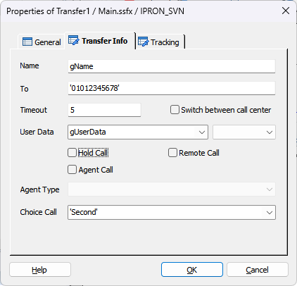
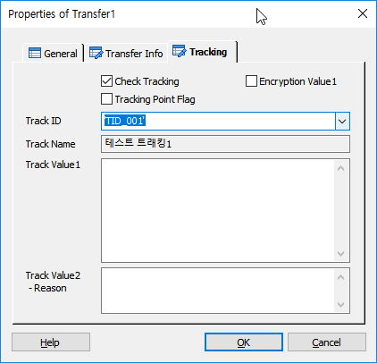

물리적인 채널간의 전환 처리를 수행하는 기능으로 PBX를 통한 호 전환을 수행 합니다.
ICON

PROPERTIES
 Transfer Info
Transfer Info

Name : 아이템의 이름을 지정 합니다.
To : 호를 전환할 DN(내선번호) 또는 DN Group을 지정 합니다.
Mute Transfer 기능 사용 시 session.cti.dn 세션 변수를 이용하여 IVR 내선 번호 이용을 권장 합니다.
Timeout : 호 전환 완료 대기 시간을 지정 합니다.
Switch between call center Check Box : 센터간 호 전환일 경우 필요 시 체크하여 콜 처리에 사용한다.(엔진 내부에서 사용, 타센터 연동시 이벤트 전달)
User Data : 사용자 데이터를 입력 합니다.
User Data Type : 사용자 데이터 타입을 입력 합니다.(Hex String, Normal String)
Hold Call Check Box : Transfer 전에 현재 콜을 홀드한다(Flash Hook)
Agent Call Check Box : 상담원 연결 카운트 집계를 위해서 체크한다.(하나의 콜에는 카운트가 1번만 집계된다. => v5.1 이후 : CtiCall 아이템 1회 호출 당 콜 통계 집계 1회 추가)
Remote Call Check Box : 3rd Party PBX 에서 수신된 호에 대해 Single Step Transfer 요청한다.(IPRON-NE Only)
Agent Type : 연결 상담원 타입을 지정합니다. 상담원 연결 통계에 사용되며, Agent Call이 체크될 때만 활설화 됩니다.
Agent(상담원), Branch office agent(영업점 상담원), Reserve1(예비1), Reserve2(예비2), Reserve3(예비3)
Choice Call : Multi Call 에서 콜을 선택 합니다.(2개 콜 까지 가능, GetChannel 로 생성)
Mute Transfer 기능 사용 시 'First' 를 선택 합니다.
※ Mute Transfer : MakeCall 이 성공(session.command.result == _SLEE_SUCCESS_) 한 후 Transfer 아이템을 이용 하여 호를 전환 합니다.
 Tracking
Tracking

트래킹을 처리합니다.
Check Tracking Check Box : Tracking을 사용 할 것인지를 체크합니다.
Tracking Point Flag Check Box : 특별한 Tracking Flag를 설정하여 SWAT에서 트래킹 시에 이 플래그가 설정된 항목만 트래킹 할 수 있습니다.
Encryption Value1 Check Box : Track Value1 속성 데이터에 대해서 암호화 처리를 합니다.
Track ID : 정의한 Track ID를 선택합니다.
- DefineTrack Item에 정의된 Track ID가 콤보박스 리스트로 제공됩니다.(Type이 없거나, Transfer인 경우)
Track Name : Track ID를 선택하면 같이 정의된 이름을 출력합니다.(SWAT에서 이 이름으로 트랙킹 시에 사용합니다.)
Track Value1 : 트래킹 시에 사용할 값을 입력 합니다.
Track Value2 :트래킹 시에 사용할 값을 입력 합니다.(결과에 대한 Reason값)
RESULT
· 처리 결과 세션 변수
session.command.result : 처리 성공(_SLEE_SUCCESS_), 실패(_SLEE_FAILED_)
session.command.reason : 실패면 실패 오류코드(시스템 상수 참조)
session.call.agentresult : 상담원 연결 결과, 성공(_SLEE_SUCCESS_), 실패(_SLEE_FAILED_), 이 값은 수정할 수 있습니다.
RELATED